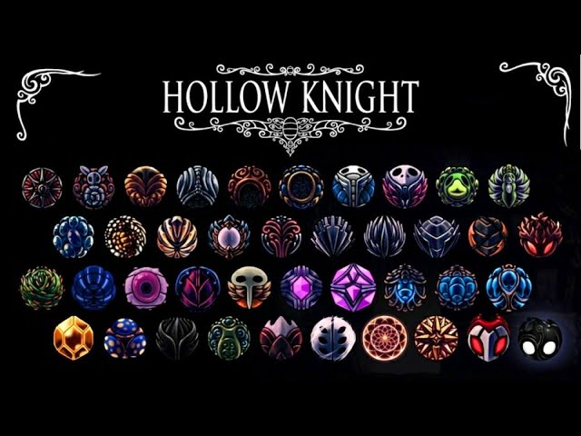
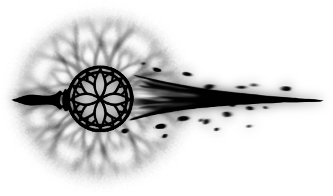

Corazón Frágil: Aumenta las máscaras de vida del Caballero. Es invaluable al inicio, pero se rompe si mueres (de ahí su nombre).
Maestro de las Sendas: Permite lanzar hechizos más rápido. Es crucial para las Builds de Magia que se centran en el Alma.

El Aguijón Puro es la forma definitiva de tu arma. Su daño es devastador. Se obtiene mediante la reunión de mineral pálido y el herrero.
Recuerda que también tienes habilidades como el Espíritu Vengativo y el Espectro Sombrío, cruciales en el combate.